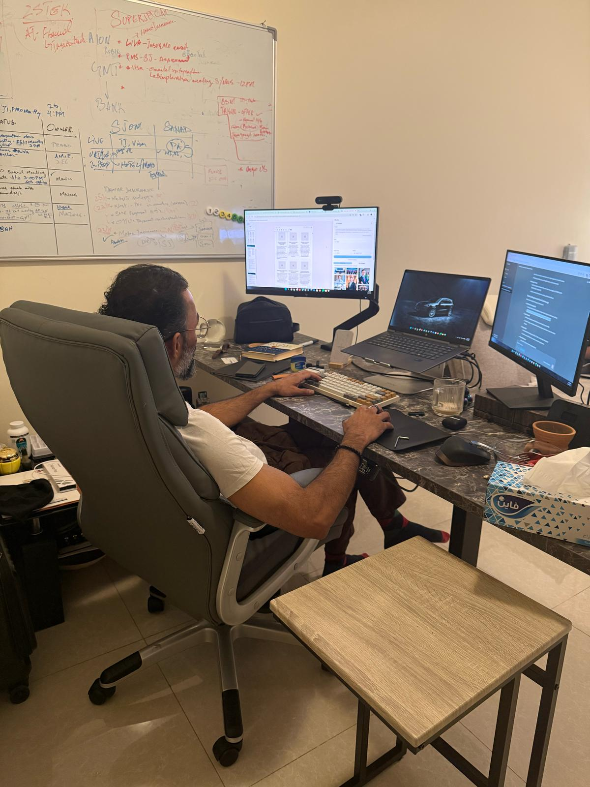

Prologue
The Night Everything Changed
Muscat · Kuwait · December 2025 — August 1990
Audio only"When systems collapse, resilience becomes your first governance framework."

Muscat, December 2025. I was sitting in my home office, thousands of kilometers from the Founders 2.0 Conference stage in Dubai, where ClarityOS was nominated. Visa logistics and travel constraints had made the trip impossible — a familiar pattern for someone who has spent a career navigating borders that do not always open on schedule. So I watched from a screen, the way I had learned to participate in a world that does not always make space for you at the table.
Entrepreneurial Excellence Award winner (2026), ClarityOS methodology. What I felt was immediate. Not pride, exactly — something closer to recognition. Not the kind an audience gives, but the kind you give yourself when the pattern you have been building for decades is finally seen by others. They don't give awards for playing it safe. Crisis forces clarity that comfort never could.
The award was for ClarityOS — a methodology the citation described as the world's first Pre-Governance Operating System. But ClarityOS did not begin in a strategy session or a product lab. It began on a night in 1990, in a city under siege, in the grip of a mother trying to keep her family together as the world she had built dissolved around her.
To understand what ClarityOS is — to understand why it works where other methodologies fail — you have to go back to that night. You have to understand what happens when systems collapse and a child learns, before he has the language for it, that clarity is born in exile, not in comfort. Alhamdulillah. The journey continues.
Kuwait, August 2, 1990. The sirens started at dusk. Not the test alarms we had grown accustomed to in Kuwait City, but the real ones — the kind that turned ordinary evenings into something you remember for the rest of your life. I was young, barely old enough to understand the geopolitics of what was happening, but old enough to feel the weight of it in my mother's grip as we moved through corridors lit by emergency generators.
August 2, 1990. Iraq's forces crossed the border into Kuwait, and in the span of hours, everything my family had built — the routines, the friendships, the quiet certainties of life in the Gulf — dissolved. We were Pakistani nationals living in Kuwait, a family that had built a life in a country that was never quite ours. We belonged and we didn't. That duality, which I would later come to understand as one of the most powerful forces in my professional life, began that night.
What follows is not a business book dressed up in personal anecdotes
It is the opposite: a deeply personal story that happens to produce business frameworks. Every framework I have built — from the Pyramid Framework with adoption rates far above the industry baseline in Telecom, AI, and Fintech deployments, to the Governance as Accelerator philosophy that managed an $80M+ procurement portfolio with zero compliance breaches — Motorola/Huawei era — was born not in a boardroom, but in a moment of displacement, adaptation, or reinvention.
This is a book about what happens when you are forced to rebuild — not once, but repeatedly. When you learn that clarity does not come from comfort, but from exile. When you discover that the same skills that help a family survive a war zone are the same skills that transform procurement from a cost center into a strategic growth engine.
Three audiences
I wrote this memoir for three audiences. First, for leaders who sense that technical frameworks alone are not enough — who know that sustainable transformation requires something deeper: character, cultural intelligence, and the courage to start at the foundation. Second, for anyone who has ever been the outsider in the room, the one who had to prove credibility twice over before being heard. And third, for my daughters — Nashwa, Amirah, and Ahlam — so they understand that their father's restlessness was never aimless. It was a compass.
These audiences are not separate in my mind. The child who learned that belonging could be conditional became the professional who noticed how quickly a room decides whose voice carries weight. The father writing to his daughters is the same person who asks what dignity looks like when a system is under pressure. If you have ever had to find your footing while others expected you to keep moving, there is room for you in these pages. I offer a story, not a formula for making hardship useful.
Let me take you back to where it began.
Listen — From Exile to Transformation · Appendix · The Pyramid Operating System